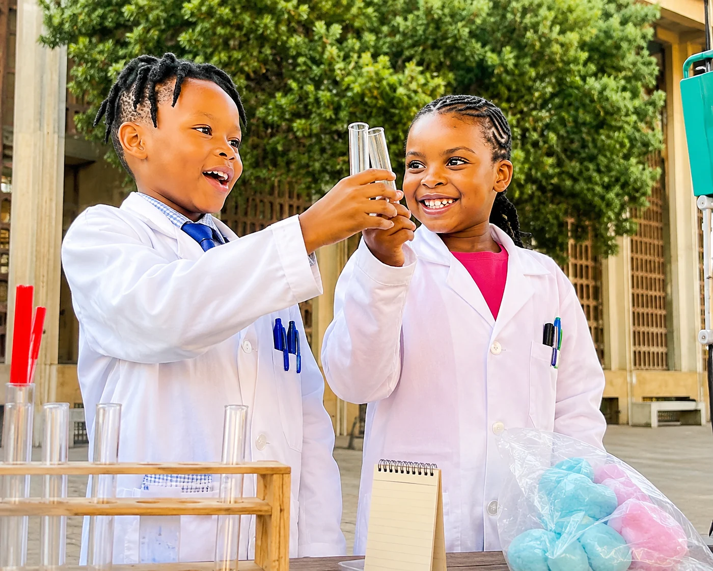
Best Early Years 2026Cradle of Creativity 2026 · Market Theatre
The Young Scientist
What if every child is already a scientist? A joyful, interactive show for ages 2+ about curiosity, imagination and discovery.
A Johannesburg centre where science meets art. We make theatre 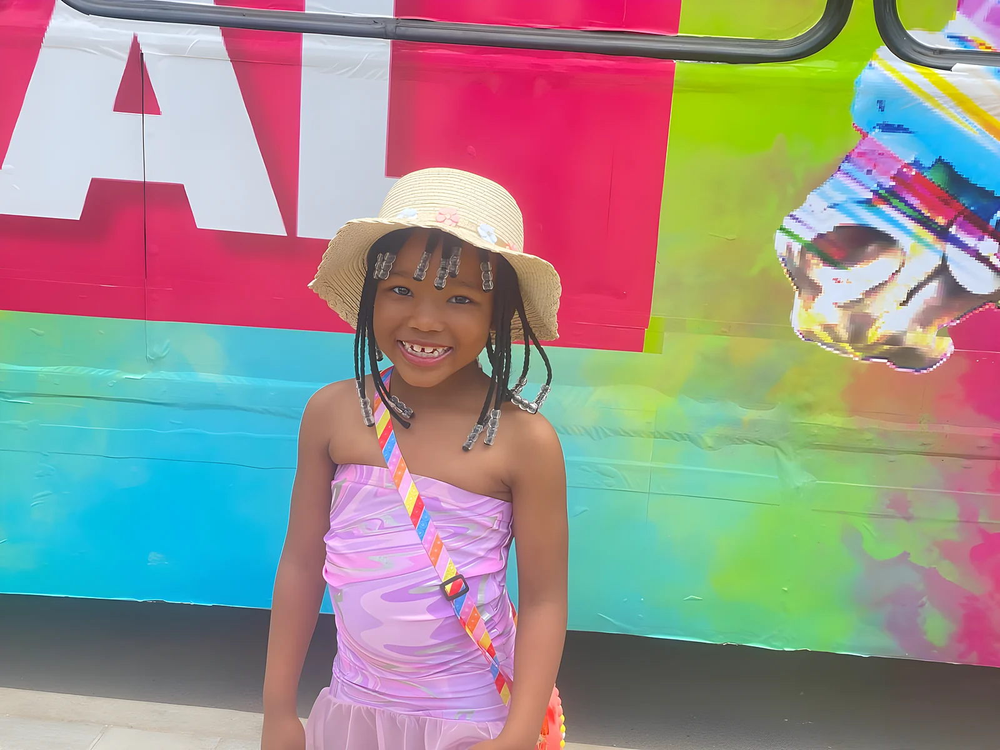
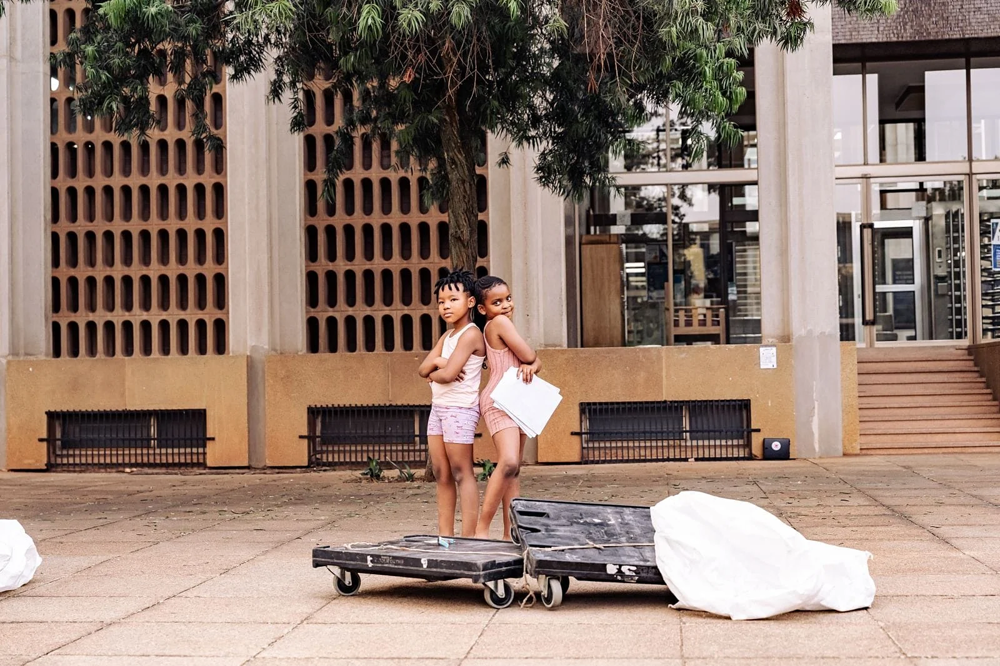
rehearsal day!say hi to our young scientists
Best Early Years 2026What if every child is already a scientist? A joyful, interactive show for ages 2+ about curiosity, imagination and discovery.
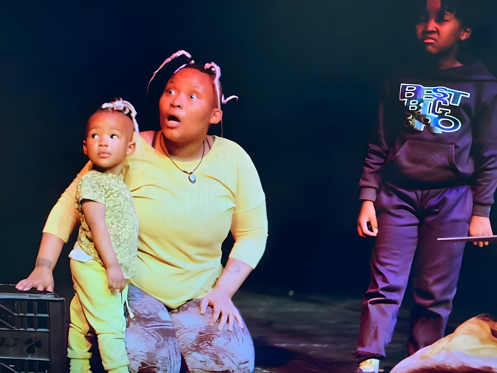
An earlier run of The Young Scientist about the child, the environment and sustainability, with a toddler in the cast.
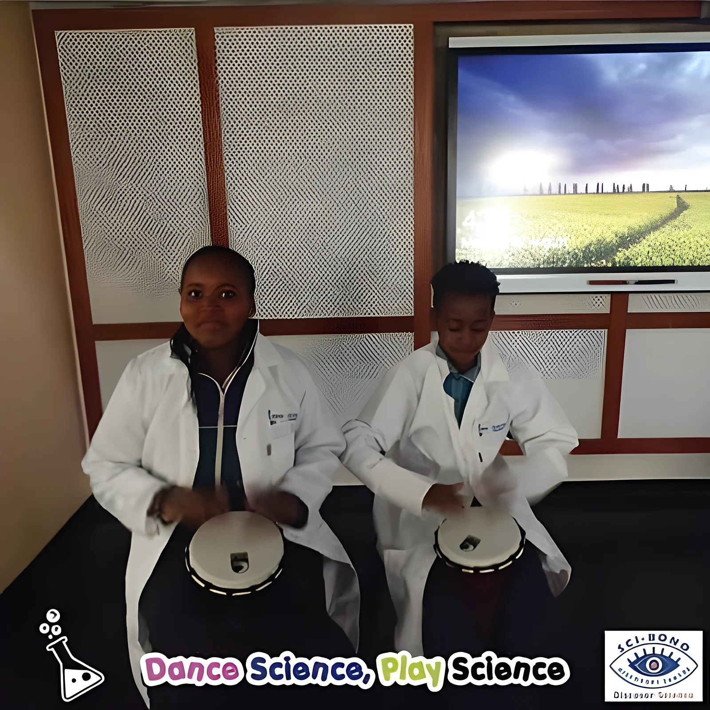
Lab coats, drums and experiments: science taught through rhythm and play.
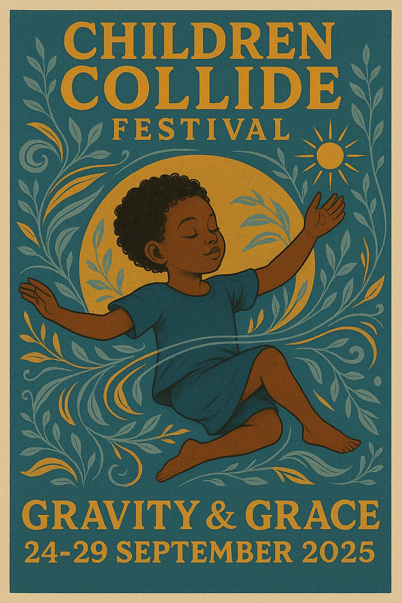
The centre's multi-sensory festival for children: Gravity & Grace, 24 to 29 September 2025.
Voted by the Young Critics at ASSITEJ South Africa's Cradle of Creativity Festival, 24 August to 6 September 2026, Kimberley and Johannesburg.
Science, technology and the arts, for children from birth to 12. Tap any card to ask about it on WhatsApp.
The Mmino Production Hub makes theatre and screen stories for the youngest audiences.
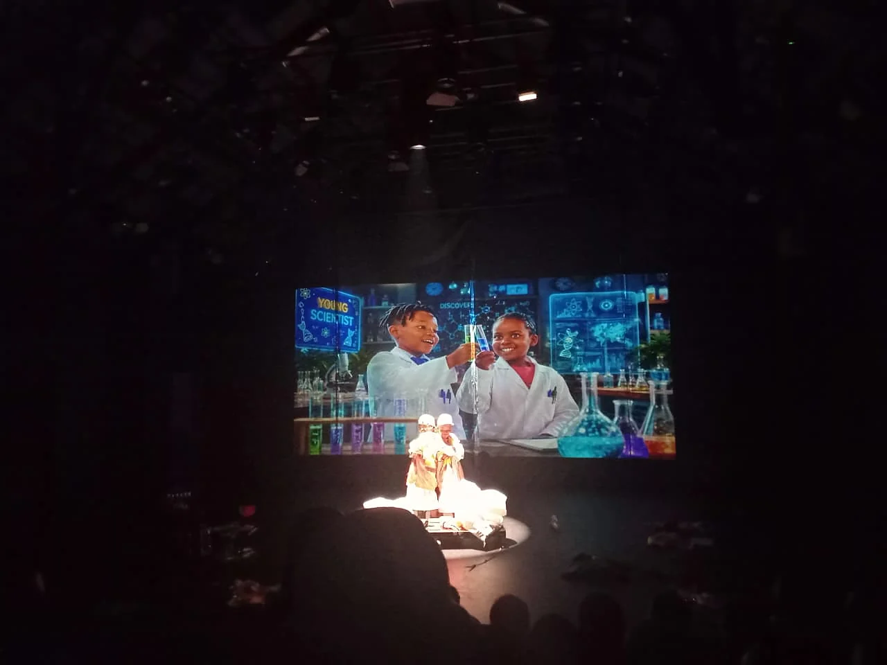
Science made live, so curiosity turns into questions children want to answer.
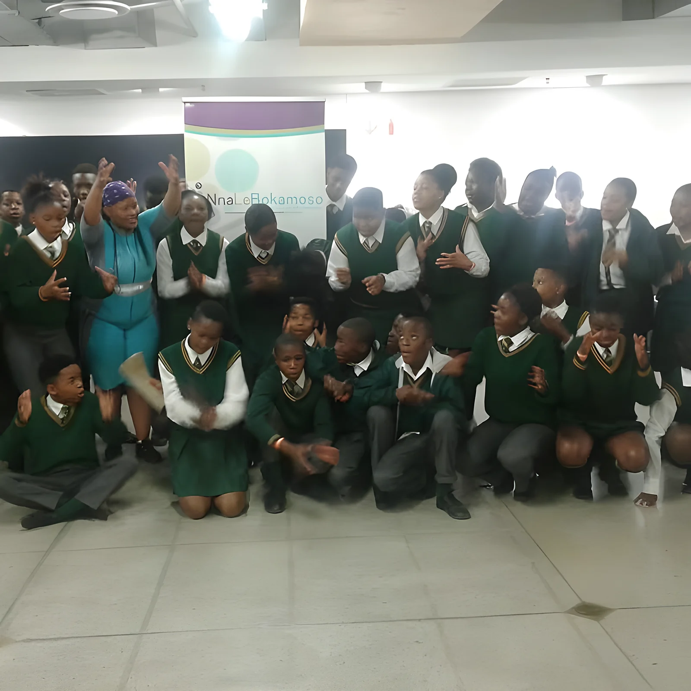
Drama therapy for young children: play, voice and movement for emotional wellness.
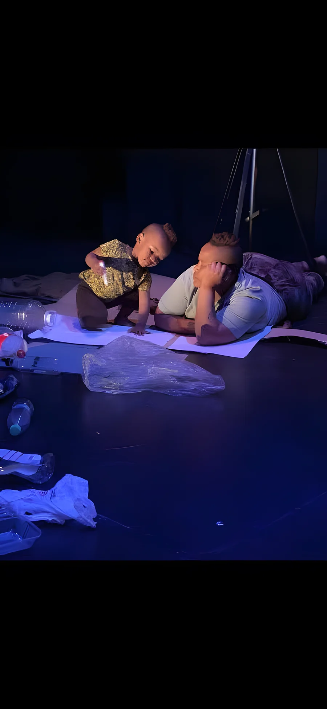
Online classes that build confidence on stage and off.
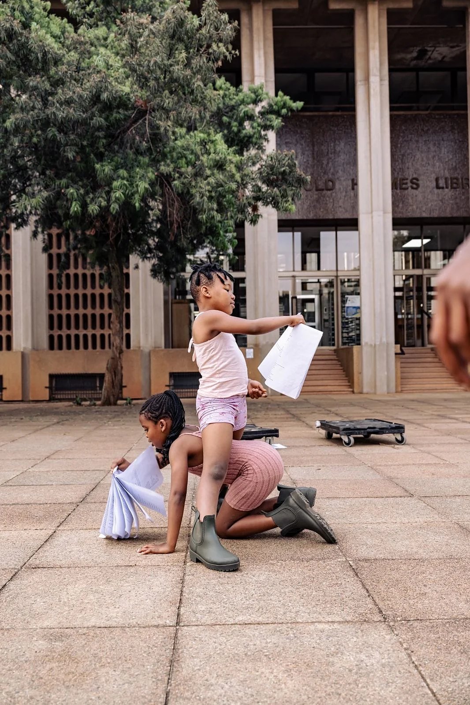
Theatre and digital storytelling labs where children write, design and perform their own stories.
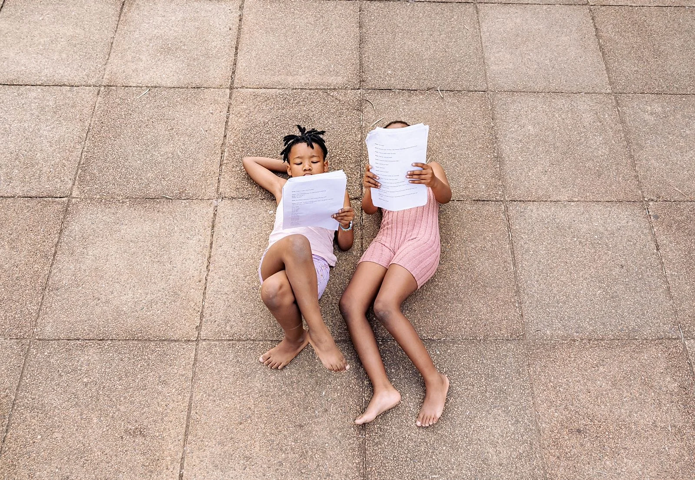
A science-and-theatre birthday, run by the centre's team.
Support for postgraduate students working in the arts, education and theatre for young audiences.
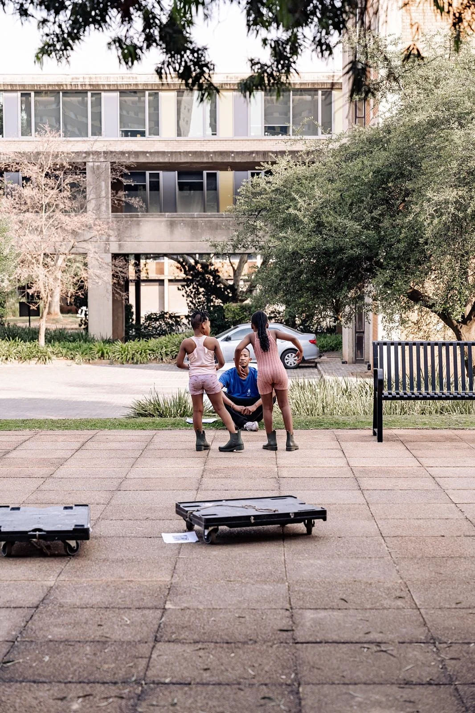
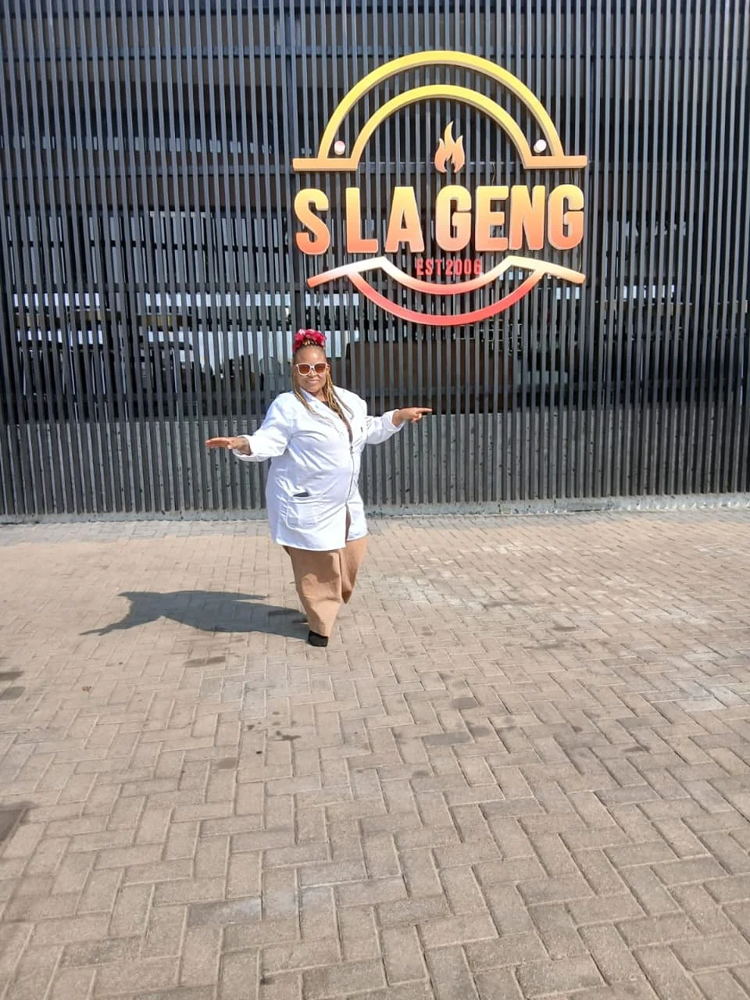
oThandiwe Lerato Sekhibane founded Nna le Bokamoso and wrote The Young Scientist.
Her work brings the uncertainty, potential and relationality of quantum physics together with African philosophy, Ubuntu and AfroFuturism, so children learn as whole beings: emotionally intelligent, ethically grounded and technologically empowered. The centre is inspired by her family, Bokamoso and Mmino.
Children are not the future; they are the now. We honour that.
oThandiwe SekhibaneWhat if every child is already a scientist?
The Young ScientistVoted Best Early Years Production by the Young Critics.
ASSITEJ SA · Cradle of Creativity 2026Book The Young Scientist for your school or centre, a class, a studio session or a birthday. Send it on WhatsApp and the team will reply with dates and prices.